Pro Wrap
Студия на Кипре: оклейка автомобилей винилом и антигравийной плёнкой, тонировка, детейлинг и керамические покрытия
Контекст
Владелец обратился за обновлением сайта. Я отвечал за весь процесс: от сбора требований и проектирования структуры до дизайна и реализации работающего сайта с помощью AI и кода.
Мой вклад
Анализ и структура
Сбор требований и анализ бизнеса, структура сайта, пользовательские сценарии.
Интерфейсы и калькулятор
Проектирование интерфейсов, калькулятор стоимости, контентная структура и визуальная подача.
Реализация
Реализация сайта с помощью AI и кода, проверка интерфейсов и итерации между дизайном и разработкой.
Проблема
Сайт не передавал уровень студии, а клиентам было сложно разобраться в услугах и ценах.
Посетитель мог узнать об основных услугах, но не получал достаточно информации, чтобы оценить стоимость, понять процесс работы и принять решение о записи.
Нужно было не просто обновить визуальную часть, а сделать сайт полноценной точкой контакта с клиентом, которая помогает разобраться в услугах и перейти к следующему шагу.
Прежний сайт
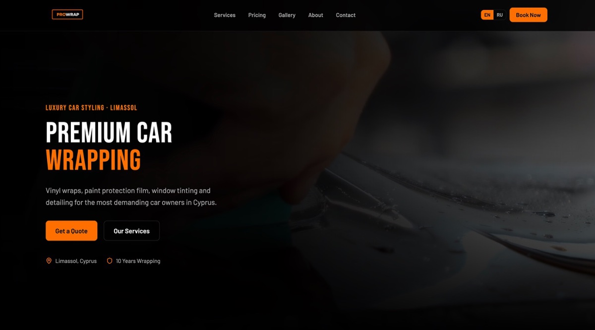
Главная
Прежний первый экран
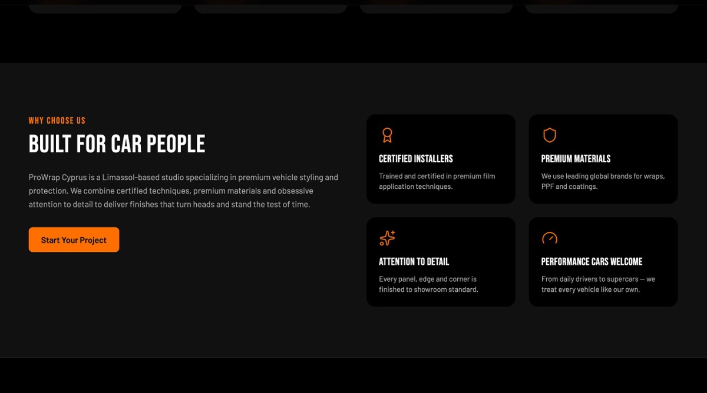
О студии
Преимущества студии карточками
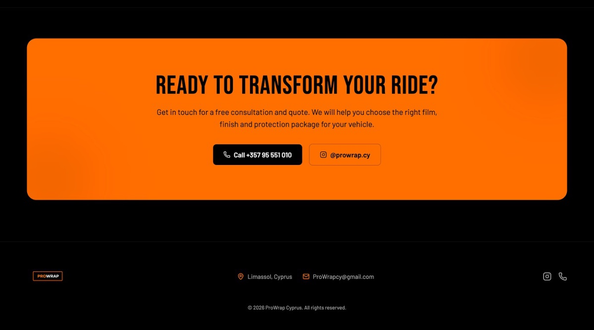
Контакты
Призыв к записи и контакты
Как я собираю вводные
Перед проектированием я использую собственный бриф из десяти блоков. Он помогает разобраться в бизнесе, аудитории, услугах, конкурентах и вопросах, которые возникают у клиентов перед покупкой.
От вводных к структуре
Ответы владельца превращаются в основу сайта. Я определяю, какую информацию нужно показать, какие сомнения снять и что поможет клиенту принять решение.
В результате каждый раздел сайта решает конкретную задачу, а структура строится вокруг потребностей посетителя, а не просто списка услуг компании.
Решение
Сайт, который помогает разобраться в услугах и принять решение.
Я выстроил структуру вокруг основных вопросов клиента: сколько стоит услуга, кому доверить автомобиль, как проходит работа и как записаться.
Понятная стоимость
Разработал калькулятор, который учитывает услугу, покрытие, тип плёнки и размер автомобиля. Клиент может получить предварительную стоимость ещё до обращения в студию.
Доверие к студии
Вынес на сайт ключевые преимущества: гарантию на плёнку, закрытый бокс с климат-контролем, сертифицированных мастеров и возможность снять покрытие без изменения заводского лакокрасочного слоя при соблюдении технологии.
Понятный процесс
Разложил работу на шесть последовательных этапов: от первой консультации до передачи автомобиля. Это помогает клиенту заранее понять, как устроен процесс и чего ожидать.
Простой путь к записи
Предусмотрел два способа связаться со студией: оставить заявку на сайте или позвонить. Основные действия доступны без лишних шагов.
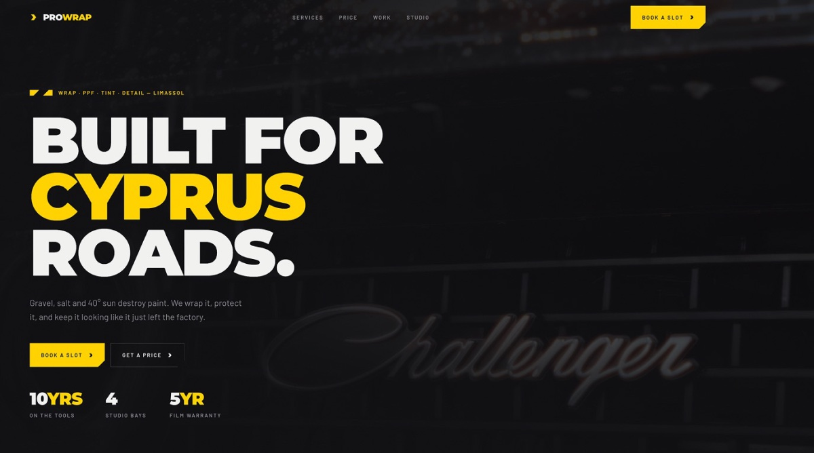
Главный экран
Первый экран и ключевые цифры студии
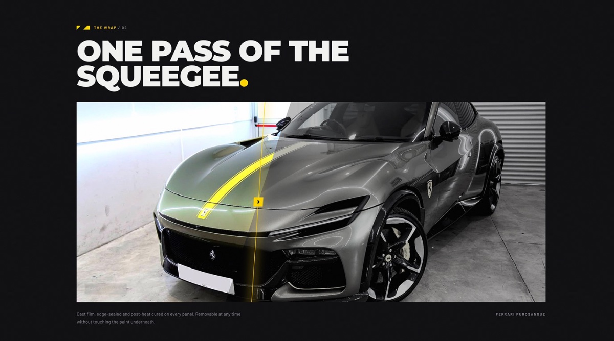
Работа
Пример оклейки на автомобиле
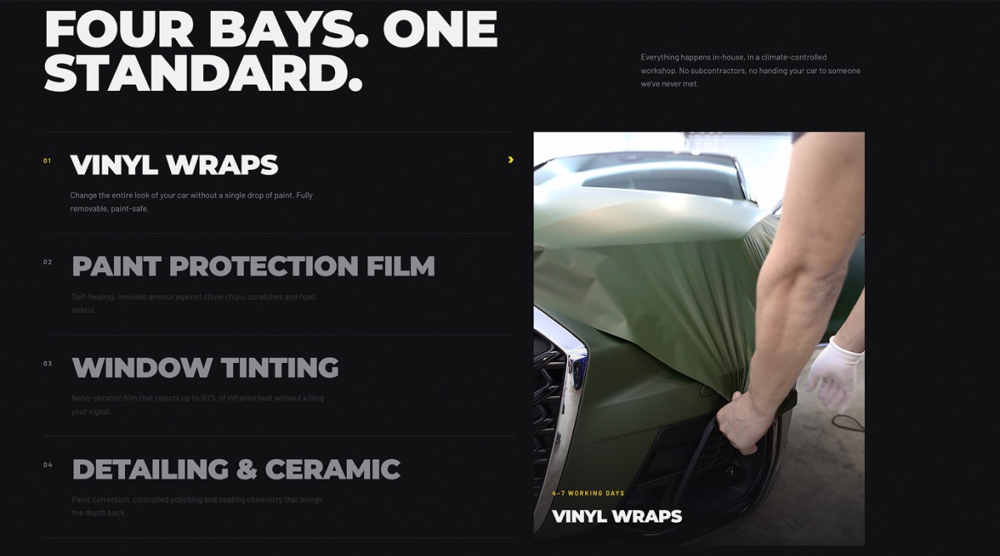
Услуги
Четыре направления студии
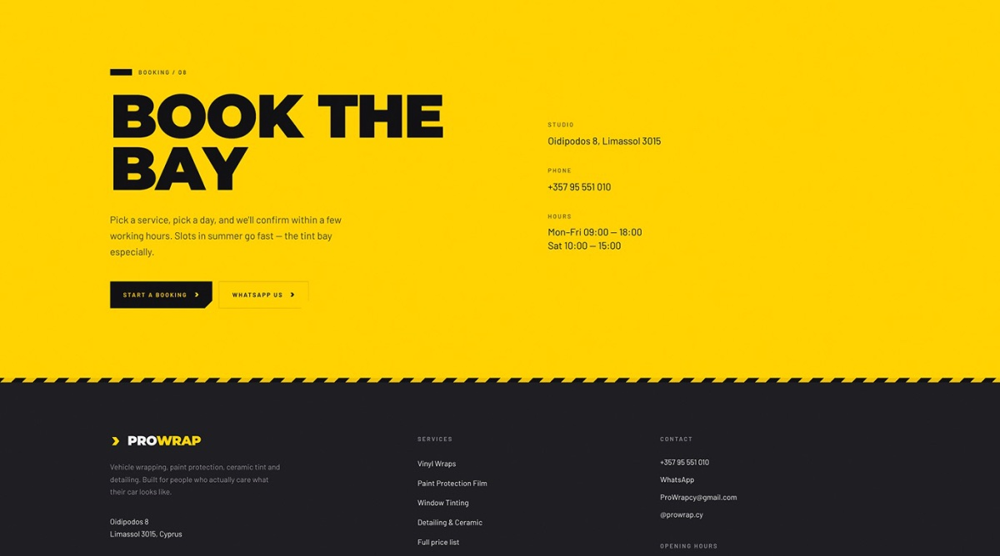
Запись
Запись в бокс, адрес и часы работы
На телефоне
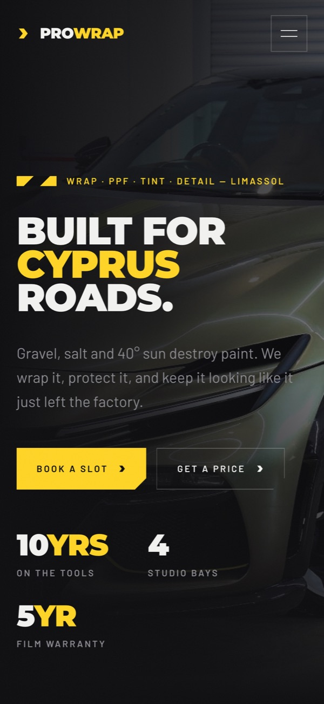
Первый экран
Студия и ключевые цифры
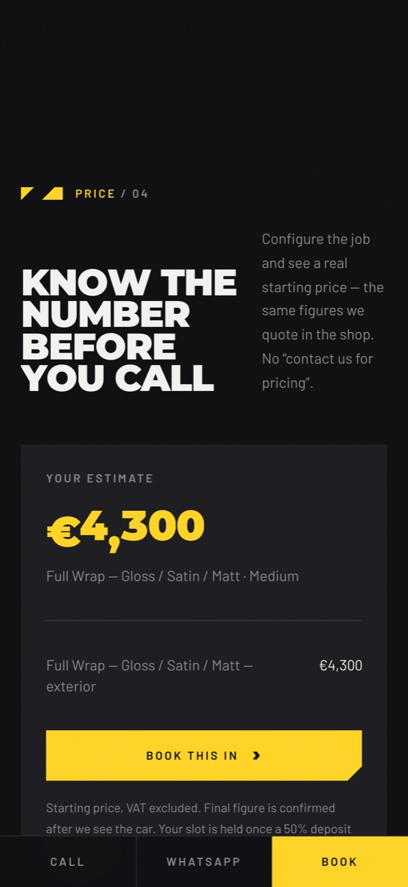
Калькулятор
Стоимость до обращения
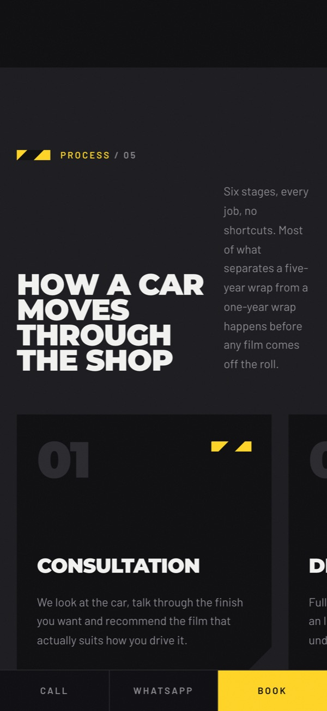
Процесс
Шесть этапов работы
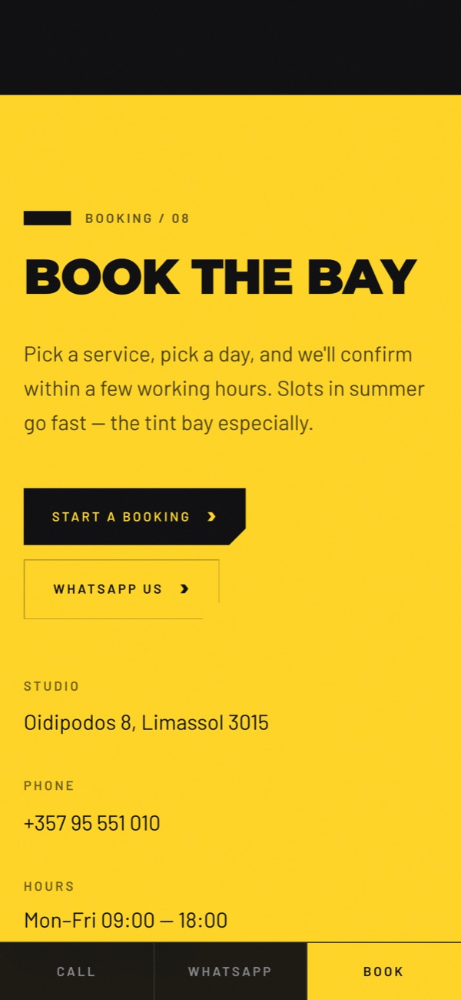
Запись
Бокс, адрес и часы работы
От дизайна к работающему продукту
Я не ограничился подготовкой макетов. Довёл проект до работающего сайта, используя AI и код для реализации интерфейсов.
По ходу работы возвращался к макетам, проверял результат в реализации и дорабатывал решения. Это позволило быстрее переходить от идеи к готовому продукту и контролировать качество интерфейса на всём пути.
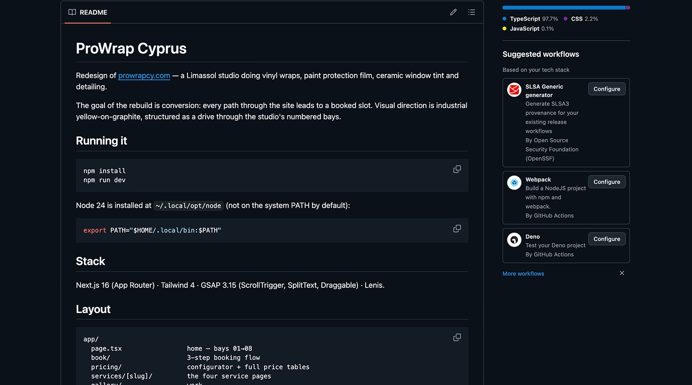
GitHub
Репозиторий сайта: стек и структура проекта
Как оценивать результат
После запуска я бы оценивал эффективность сайта по нескольким показателям:
Эти метрики помогают понять, не просто нравится ли пользователям новый сайт, а помогает ли он бизнесу получать обращения и упрощать путь клиента.